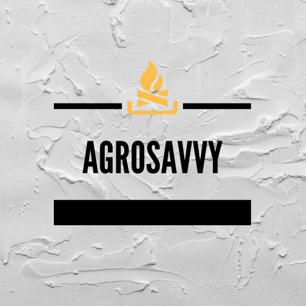

Welcome to agrosavvy.com
Work in progress
About Us
AgroSavvy is a Canada based business specializing in the sourcing and export of charcoal and agricultural produce from Africa to buyers around the world, specifically the Americas, Asia, and Europe.
We have extensive partnership with farmers and charcoal producers in West Africa and have facilitated deals for our buyers/clients across the globe. We insist on quality products for our buyers and go the extra mile to meet their demands.
Our Products
- CHARCOAL: We sell international grade hardwood charcoal that meets the specifications and packaging requirements of our clients. We pride ourselves in our excellent customer service delivery, the quality of our products and the speed of execution of our clients’ order. With us, you will never have to worry about the hassles and complexities involved in sourcing for high quality and competitively priced charcoal from Africa.
- Other Products: Sesame Seeds, Shea Butter, Dried Cashew nuts, Peanuts, Cassava-based products
Contact Us
AgroSavvy, 10740 109 Str. NW, Edmonton, Alberta T5H 3B6, Canada
Tel: +1 (780) 716-4898